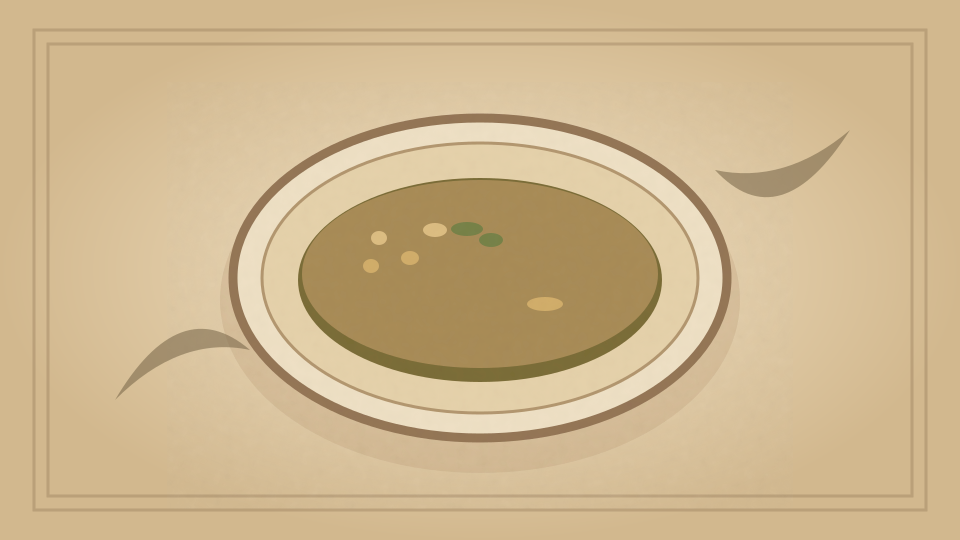

1910 · Fannie Merritt Farmer · SOUPS WITHOUT STOCK
Corn Chowder
The Boston Cooking-School Cook Book

Historical Recipe
The following text is extracted from the 1910 edition, retaining historical terminology and quantities.
Original Ingredients & Directions
1 can corn
4 cups potatoes, cut in ¼-inch slices
1½-inch cube fat salt pork
1 sliced onion
4 cups scalded milk
8 common crackers
3 tablespoons butter
Salt and pepper
Cut pork in small pieces and try out; add onion and cook five minutes, stirring often that onion may not burn; strain 142 fat into a stewpan. Parboil potatoes five minutes in boiling water to cover; drain, and add potatoes to fat; then add two cups boiling water; cook until potatoes are soft, add corn and milk, then heat to boiling-point. Season with salt and pepper; add butter, and crackers split and soaked in enough cold milk to moisten. Remove crackers, turn chowder into a tureen, and put crackers on top.
Automatically extracted transcription; editorial verification pending. Historical instructions may not meet modern food-safety standards.